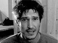

L'ICPA est une association privée créée par des amis et des collègues du journaliste Jack Lorski au lendemain de l'annonce de son meurtre en Écosse. Son seul but est d'aider les services de police et de justice internationaux à mettre fin le plus tôt possible aux agissements criminels du Phoenix.
SKL NETWORK est l'agence qui employait Jack Lorski. Elle a reçu et rendu public les deux CD-Roms envoyés par le Phoenix.
LIBERATION.FR a publié plusieurs articles sur l'affaire du Phoenix. Utilisez son moteur de recherches pour accéder à ses archives.
VICTIME N°13 : ALEX BORGO
- IDENTITÉ
Alexandre (Alex) Borgo avait 28 ans. Il était journaliste d'investigation. C'est au cours d'un reportage à Prague qu'il a fait la connaissance de Carolina Molikova en juillet 2001. Ils vivront tous les deux une belle mais brève histoire d'amour.
En juillet 2003, après avoir appris l'assassinat de Carolina, il décide d'aller enquêter sur les meurtres du Phoenix en République tchèque et en Allemagne. Il est accompagné de son caméraman, Tom Altman. Afin de comprendre le fonctionnement et les coulisses de Manus Domini dont Carolina faisait partie, il décide d'infiltrer la société secrète dès le mois d'octobre 2003.
Sa soeur Mary et sa mère n'ont jamais cru à l'hypothèse d'un suicide et se sont toujours battues pour faire toute la vérité sur la mort d'Alex.
- PHOTO*
* Extraite d'une vidéo d'Alex Borgo.
- DATE ET LIEU DU CRIME
Alex Borgo est mort dans la nuit du dimanche 22 au lundi 23 février 2004, dans son appartement de Champigny (94). Son corps a été découvert par sa voisine de palier qui s'étonnait de voir la porte d'entrée grande ouverte. - AUTOPSIE
Alex Borgo est mort d'un coup de fusil tiré à bout portant. Aucune trace de lutte ou de torture n'apparaît sur son corps. Les analyses effectuées lors de l'autopsie ont montré que le journaliste avait pris d'importantes quantités de somnifères et d'anti-dépresseurs dans la semaine précédent son décès. - ANALYSE
Alex Borgo est la treizième victime connue du Phoenix. Dans l'état actuel de nos connaissances, c'est la première fois que le tueur assassine une personne qui n'est pas membre de Manus Domini. Aucun rituel ne semble avoir été pratiqué et aucune des signatures habituelles du Phoenix (marquage au fer rouge, inscription Sol Invictus près du corps, mise en scène selon la magie brunienne, etc.) n'est visible sur le lieu du meurtre ou sur le cadavre.
Ce crime diffère donc complètement des douze autres et si le Phoenix n'avait pas lui-même revendiqué cet assassinat, personne n'aurait pu faire un lien avec ses méthodes habituelles.
Ce meurtre prouve que le Phoenix poursuit désormais un autre objectif qu'une simple vengeance contre Manus Domini ; il n'hésite plus à tuer quiconque se met en travers de son chemin.
- COMMENTAIRE DU PHOENIX
• « Ha ha ha cet Alex était bien naïf !
Il croyait pouvoir détruire à lui tout seul Manus Domini ! Quel orgueil !
Quoiqu'il en soit, son reportage risquait de compromettre mes plans ;
Malgré toute la haine que je porte pour cette organisation
J'ai préféré le faire taire…
Il n'a pas souffert… ou très peu.
Pour accomplir l'Oeuvre Ultime, sa mort était nécessaire.
[…] Je ne voulais pas que la police compromette mon plan en fouillant
Dans les arcanes de l'organisation et dans son passé. » - DOCUMENTS
• Le cd-rom blanc du Phoenix
Ce document envoyé en octobre 2004 à SKL Network raconte l'enquête d'Alex Borgo sur le meurtre de Carolina Molikova, son ex-compagne.
• Le dernier message d'Alex Borgo
« Je m'appelle Alex Borgo. Je suis journaliste d'investigation. J'ai appris ce matin la mort de mon ami Tom, mon caméraman. Je ne crois pas à un accident. Je suis persuadé au contraire que Tom a été assassiné par une organisation secrète appelée Manus Domini. Cette organisation est très influente. J'ai en ma possession des documents et des films extrêmement compromettants à son sujet. Je crains maintenant pour ma vie mais je vais tout faire pour trouver les coupables. J'espère pouvoir convaincre la police. Si j'effectue cet enregistrement, c'est pour témoigner, au cas où il m'arriverait quelque chose. Je vous en supplie, diffusez la ! Il faut alerter l'opinion publique et les autorités ! Il faut absolument que ces assassins soient arrêtés ! »
- LIENS
• Site de l'agence de Tom Altman
• Site personnel de Tom Altman
• Livre d'Alex Borgo chez alapage.com